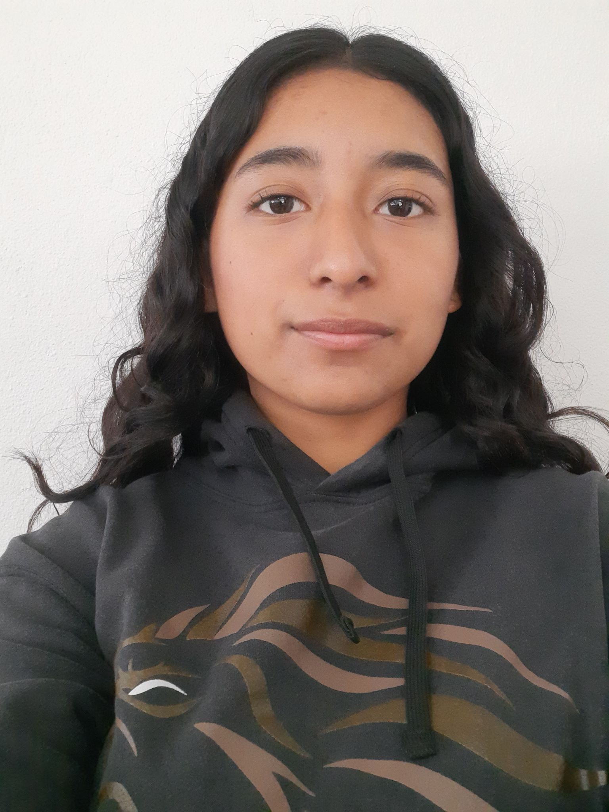

Especialidad: TIC'S
Grupo: 602
Materia: Diseño Digital y Página Web
Como conclusión de todo este bloque, me doy cuenta de que crear un sitio web va muchísimo más allá de solo diseñar una página bonita o escribir código; implica entender todo un ecosistema digital para que realmente funcione. Por un lado, aprender sobre el modelo cliente-servidor y el hosting me ayudó a entender la parte lógica detrás de internet: cómo viajan los datos y la importancia de elegir un buen servidor para que la página sea rápida y no se caiga. Además, ver las reglas y estándares de internet me hizo consciente de que no podemos programar como queramos; existen normas globales que debemos seguir para que cualquier persona, desde cualquier dispositivo, pueda navegar sin problemas. Al final, lo que más valor me dejó fue conectar la teoría con la práctica. El desarrollo del sitio web me sirvió para pulir mis habilidades de programación, pero la auditoría y el plan de lanzamiento me enseñaron que el trabajo no termina al acabar el código. Revisar la seguridad, el rendimiento y planear cómo lanzar la página es lo que realmente marca la diferencia entre un trabajo escolar y un proyecto profesional listo para el mundo real. En resumen, este módulo me cambió la perspectiva, pasando de ser un simple usuario que navega en internet a alguien que ya entiende cómo se construye y se gestiona la red.